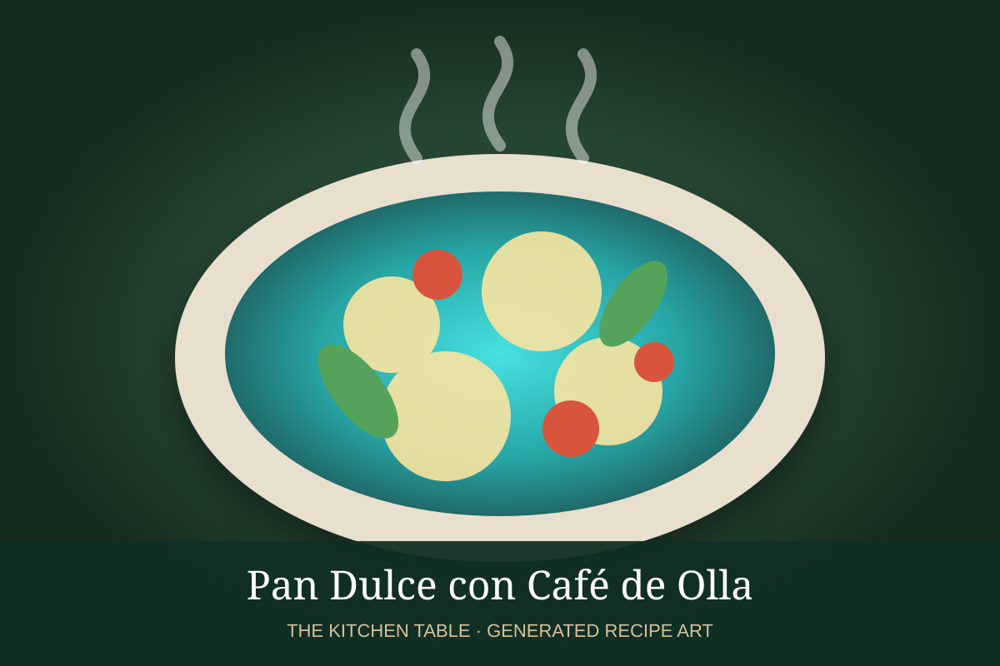

← Back to all recipes
BREAKFAST · MEXICAN
Pan Dulce con Café de Olla
Assorted Mexican pan dulce served with spiced café de olla brewed with cinnamon and piloncillo.
25 minServes 4

Photo: Recetas Mexas
Ingredients
- 4 to 8 pieces assorted pan dulce, such as conchas or cuernitos
- 4 cups water
- 4 tbsp ground coffee
- 3 to 4 oz piloncillo
- 1 cinnamon stick
- 1 star anise, optional
- 1 strip orange peel, optional
Preparation
- Bring water, piloncillo, cinnamon, star anise, and orange peel to a gentle simmer until piloncillo dissolves.
- Add coffee, stir, and simmer very gently 3 to 4 minutes.
- Remove from heat and steep 5 minutes.
- Strain through a fine sieve or cloth.
- Serve hot with assorted pan dulce.